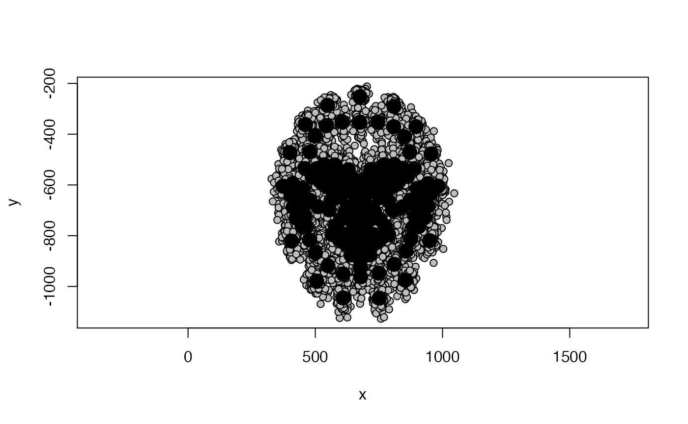

library(facefuns)
library(geomorph)
#> Loading required package: RRPP
#> Loading required package: rgl
library(webmorph)It might be better keep reading/conversion of data separate from the rest of basics/quickstart function? There are so many different potential starting points; and doing the conversion on the fly in the big function means we either have to save the data in the output (and that will be a sizeable object most of times), or one has to re-run basic function every time (for example, when a change to templates is made).
Either way, new function: read_shapedata
Has the following options
if someone has been using R package webmorph, webmorph::read_tem (if any changes to template are desired, these probably either will have already be done or will be done with other webmorph functions)
if someone has used webmorph to delineate, but is coming to facefuns directly from online webmorph and really doesn’t want to anything except for shape stuff and maybe delete some points before doing so, we’ll use (the much more basic) facefuns::convertTEMtoTPS (now adapted to fit webmorph code)
if someone already has a tps file because they delineated in different software, use geomorph::readland.tps
read_shape data thus checks whether input is (1) class webmorph_list, (2) tps file or (3) tem file(s), and will output array that can be directly read by gm.prcomp etc. Option to save data as .tps file.
Basics thus needs to check for class array, as well as correct dimensions.
TESTING
path_to_tem <- system.file("extdata/tem", package = "facefuns")
path_to_tps1 <- tempfile(fileext = ".tps")
path_to_tps2 <- tempfile(fileext = ".tps")
temlist <- webmorph::read_stim(path_to_tem, images = FALSE)
test_temlist <- read_shapedata(shapedata = temlist, path_to_tps = path_to_tps1)
test_temlist_output <- geomorph::readland.tps(path_to_tps1, specID = "ID")
#>
#> No curves detected; all points appear to be fixed landmarks.
#>
#> Warning: not all specimens have scale adjustment (perhaps because they are already scaled);
#> no rescaling will be performed in these cases
#>
#> Negative landmark coordinates have been identified and imported as such.
#> If you want to treat them as NAs please set negNA = TRUE
plotAllSpecimens(test_temlist_output)
test_tem <- read_shapedata(shapedata = path_to_tem, path_to_tps = path_to_tps2)
test_tem_output <- geomorph::readland.tps(path_to_tps2, specID = "ID")
plotAllSpecimens(test_tem_output)
test_tps <- read_shapedata(shapedata = path_to_tps1)
#>
#> Negative landmark coordinates have been identified and imported as such.
#> If you want to treat them as NAs please set negNA = TRUE